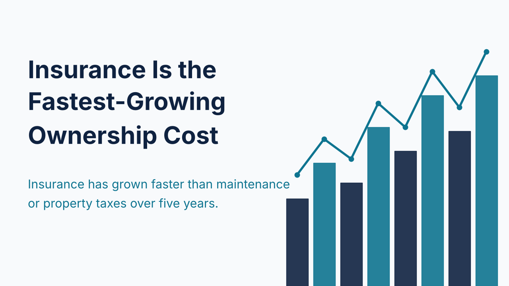
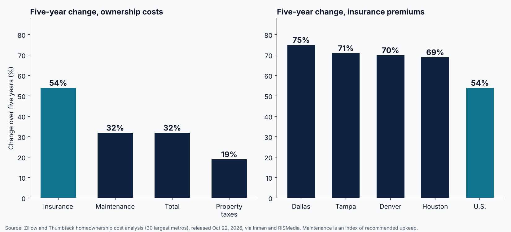

Insurance Premiums Rise 54% in Five Years and Now Exceed Property Taxes in Two-Thirds of Counties

A Zillow and Thumbtack analysis of the 30 largest U.S. metros, released October 22, 2026, puts the typical annual cost of owning a home beyond the mortgage at $16,566, or about $1,380 a month. That total is up 32% over five years, roughly $4,000 more than in 2021, and 3% higher than a year ago. Maintenance accounts for $11,171 of the total, property taxes for $3,129, and insurance for $2,266. The maintenance figure is an index of recommended upkeep priced at Thumbtack rates, not what owners actually spent, so the two smaller lines are the more precise measures.
Insurance is the fastest-growing component. It is up 54% over five years, against 32% for maintenance and 19% for property taxes. In 19 of the 30 metros, premiums rose at least 50%. The largest five-year increases were in Dallas at 75%, Tampa at 71%, Denver at 70%, and Houston at 69%. Miami carries the highest premium at nearly $5,000 a year, and six metros now exceed $3,000: Miami, Dallas, Houston, Tampa, Orlando, and Denver. Insurance already exceeds property taxes in four of the metros studied: Houston, Phoenix, Denver, and Nashville. The recent pace is slower, with federal data cited by Inman showing premiums up 0.3% between February and June 2026.

A separate Bloomberg Intelligence analysis, reported by Insurance Journal on October 20, 2026, measures the same pressure by county. Home insurance premiums exceed the property tax bill in about two-thirds of U.S. counties, and the county-average premium is 14% higher than the tax bill. In Southeastern states, insurance runs 2.5 to 4 times the tax levy. County-average premiums are up 45% over the last decade after adjusting for inflation. The two studies use different geographies and methods, so their percentages should not be compared directly, but both point to insurance as the cost line gaining ground on taxes.
For investors and lenders reviewing deals this week, the implication is that operating costs deserve the same scrutiny as price and rate. Many debt service coverage programs count taxes and insurance alongside principal and interest, so a premium that has risen by half over five years can reduce coverage even when rent and loan terms are unchanged. That is an inference about underwriting, not a measured result, and treatments vary by lender. The practical step is to use a current insurance quote, not the seller's historical figure, when testing a property.
Insurance costs vary widely by metro, and the metros with the sharpest increases are often the ones where investors are most active. Underwriting each deal against a current quote keeps the coverage estimate honest and avoids surprises late in the process.